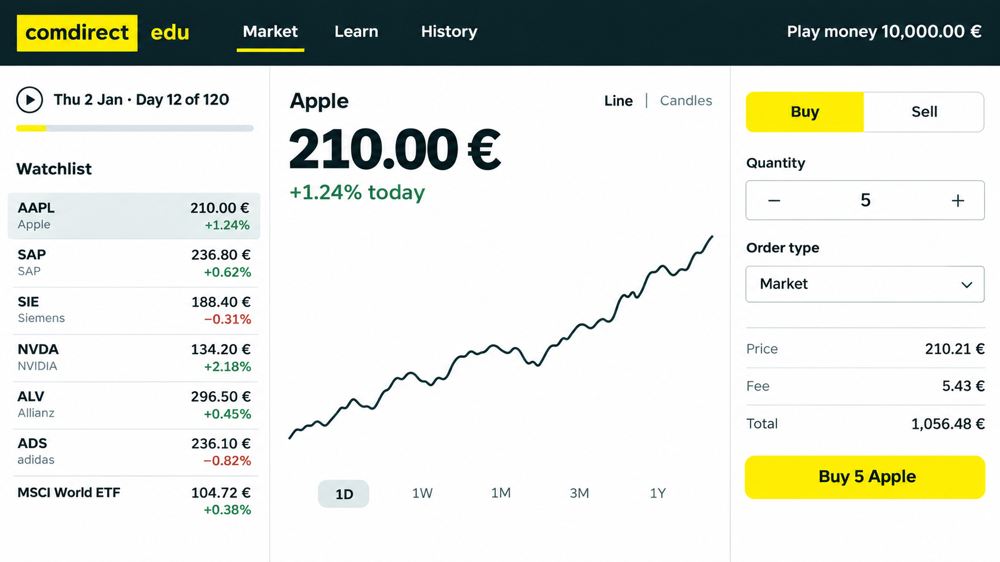
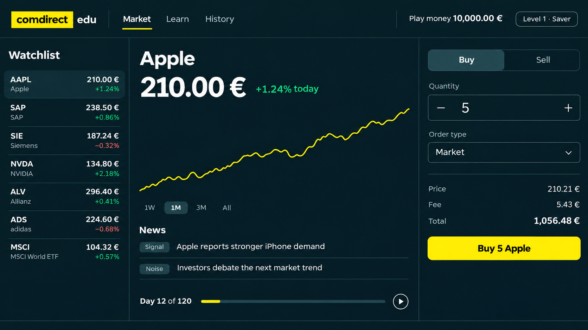
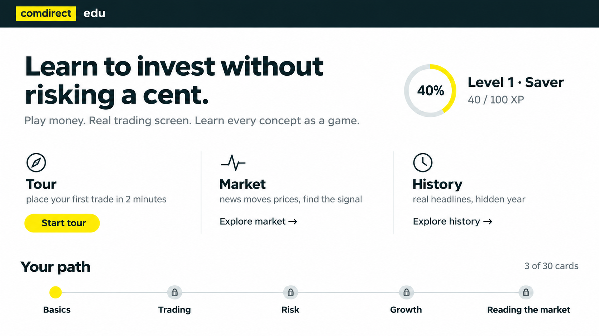
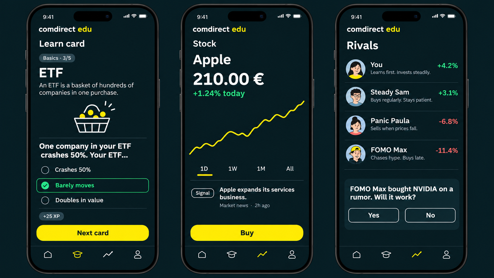

Спокойный, как Robinhood.
Чёткий, как OKX.
Цвета comdirect.
Цель: новичок видит одну главную вещь на экране и одно действие. Цвета бренда остаются: тёмный петроль и жёлтый.
Уже сделано в ветке pofa_design
- готово Симулятор — светлая тема в цветах Commerzbank / comdirect: белые панели, петрольный текст и линия графика, жёлтый только для действий.
- готово Плоские панели: нет теней, тихие заголовки панелей, линии 1 px.
- готово Блок цены как у Robinhood: имя мелко, цена 48 px, изменение под ценой.
- готово График по умолчанию — одна петрольная линия без сетки (жёлтая линия на белом не проходит контраст 3:1). Свечи — по переключателю «Candles».
- готово Главная: светлый верх, режимы через линии, одна жёлтая кнопка «Start tour».
- готово Шапка: «New market» и «Start tour» стали тихими текстовыми кнопками.
- готово Список бумаг слева (watchlist), как на мокапе 01: тикер, имя, цена, % за день.
- готово Тур без затемнения экрана: цель обведена жёлтой рамкой. Лёгкая вуаль только на первом шаге.
- готово Мобильная навигация снизу: Home, Learn, Market, History (как на мокапе 03).
- готово Путь обучения — линия из 5 шагов: пройдено ✓, текущий жёлтый, закрытые серые.
Что взяли из референсов
Robinhood
- Имя бумаги и цена — самый крупный текст на экране.
- График — одна линия. Нет сетки и осей.
- Таймфреймы — короткие кнопки под графиком.
- Панель покупки — 4 строки и одна яркая кнопка.
OKX
- Панели разделены линиями в 1 px, а не карточками.
- Слева — компактный список бумаг с цветным % изменения.
- Мелкий, но плотный текст. Цифры одной ширины.
- Подсказки тура — небольшие, рядом с элементом.
Что не берём
- Плотность OKX (стакан, десятки индикаторов). Это пугает новичка.
- Оранжевый/зелёный акцент чужих брендов.
- Маркетинговые 3D-картинки.
Палитра
Те же цвета бренда. Тема светлая. Правило: жёлтый — только для главного действия, активной вкладки и прогресса.
Фон страницы
#DBE2E5 · 40 %
Мокапы
Сгенерированы через ChatGPT image (Codex CLI). Это концепты, не пиксель-в-пиксель макеты. Мелкий текст на картинках может быть неточным.

04 · Симулятор рынка, светлая тема (текущее направление)

01 · Симулятор рынка, тёмная тема (первый вариант, заменён светлым)

02 · Главная, светлая тема

03 · Мобильная версия: урок, акция, соперники
Правила интерфейса
- Одна жёлтая кнопка на экране. Остальные кнопки — текст или контур.
- Нет теней и серых шапок панелей. Панели разделяет линия 1 px.
- Цена крупно. Имя 24 px, цена 48 px, изменение — цветом под ценой.
- График — одна жёлтая линия. Свечи — только по кнопке «Свечи».
- Пустое состояние — одна строка текста. Без большой иконки.
- Тур — подсказка у элемента. Экран не затемняется целиком.
- Числа — tabular-nums. Цифры не прыгают при обновлении.
Что изменить в текущем экране
Токены для кода
Так токены заданы в коде ветки сейчас.
/* globals.css — бренд-токены Commerzbank / comdirect, светлая тема */
:root {
--color-ink: #0b1f26; /* текст, линия графика */
--color-ink-2: #506c74; /* вторичный текст */
--color-bg-light: #dbe2e5; /* линии 1 px */
--color-white: #ffffff; /* панели */
--color-accent: #fff500; /* только действия, активная вкладка, прогресс */
--chart-line: var(--color-ink);
}
План внедрения
- Токены тёмной темы и плоские панели. Около 1 часа. Даёт 70 % эффекта.
- Шапка: убрать лишние кнопки, оставить вкладки и счёт.
- Блок цены и линейный график в стиле Robinhood.
- Панель ордера: 4 строки и одна жёлтая кнопка.
- Тур: подсказки без затемнения.
- Главная и уроки: светлая тема, больше воздуха.
Референсы: robinhood.com (страница акции AAPL), okx.com (спот-торговля BTC/USDT). Просмотрены 21.11.2026.